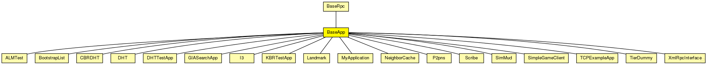

This documentation is released under the Creative Commons license
This documentation is released under the Creative Commons licenseBase class for application implementations
Author: Ingmar Baumgart, Bernhard Heep, Stephan Krause
The following diagram shows usage relationships between types. Unresolved types are missing from the diagram. Click here to see the full picture.
The following diagram shows inheritance relationships for this type. Unresolved types are missing from the diagram. Click here to see the full picture.
| BaseRpc (simple module) |
Base module for simple RPC communication |
| ALMTest (simple module) | (no description) |
| BootstrapList (simple module) |
The BootstrapList module maintains a list of bootstrap node candidates received from various sources (GlobalNodeList for simulations and Zeroconf for SingleHostUnderlay). This list is also used to detect overlay partitions and triggers the merging process. |
| CBRDHT (simple module) |
Simple module of the DHT |
| DHT (simple module) |
Simple module of the DHT |
| DHTTestApp (simple module) |
Simple module of the DHT test application |
| GIASearchApp (simple module) |
Test application for testing GIA search-protocol |
| I3 (simple module) |
Module for I3 servers |
| KBRTestApp (simple module) |
Simple module of the KBR test application |
| Landmark (simple module) |
Author: Fabian Hartmann |
| MyApplication (simple module) | (no description) |
| NeighborCache (simple module) |
Module for collecting neighborhood information (rtt, coordinates, ...) Author: Bernhard Heep Author: Antonio Zea |
| P2pns (simple module) |
The main module of the P2PNS implementation |
| Scribe (simple module) | (no description) |
| SimMud (simple module) | (no description) |
| SimpleGameClient (simple module) | (no description) |
| TCPExampleApp (simple module) | (no description) |
| TierDummy (simple module) |
A dummy module for Tier1-3 modules |
| XmlRpcInterface (simple module) |
The main module of the XML-RPC interface |
| Name | Type | Default value | Description |
|---|---|---|---|
| rpcUdpTimeout | double |
default timeout value for direct RPCs |
|
| rpcKeyTimeout | double |
default timeout value for routed RPCs |
|
| optimizeTimeouts | bool |
calculate timeouts from measured RTTs and network coordinates |
|
| rpcExponentialBackoff | bool |
if true, doubles the timeout for every retransmission |
|
| debugOutput | bool |
enable debug output |
| Name | Value | Description |
|---|---|---|
| class | BaseApp | |
| display | i=block/app |
| Name | Direction | Size | Description |
|---|---|---|---|
| udpIn | input |
gate from the UDP layer |
|
| from_lowerTier | input |
gate from the lower tier |
|
| from_upperTier | input |
gate from the upper tier |
|
| direct_in | input |
gate for sendDirect |
|
| trace_in | input |
gate for trace file commands |
|
| tcpIn | input |
gate from the TCP layer |
|
| tcpOut | output |
gate to the TCP layer |
|
| udpOut | output |
gate to the UDP layer |
|
| to_lowerTier | output |
gate to the lower tier |
|
| to_upperTier | output |
gate to the upper tier |
// // Base class for application implementations // // @author Ingmar Baumgart, Bernhard Heep, Stephan Krause // simple BaseApp extends BaseRpc { parameters: @class(BaseApp); @display("i=block/app"); bool debugOutput; // enable debug output gates: input udpIn; // gate from the UDP layer input from_lowerTier; // gate from the lower tier input from_upperTier; // gate from the upper tier input direct_in; // gate for sendDirect input trace_in; // gate for trace file commands input tcpIn; // gate from the TCP layer output tcpOut; // gate to the TCP layer output udpOut; // gate to the UDP layer output to_lowerTier; // gate to the lower tier output to_upperTier; // gate to the upper tier }
This documentation is released under the Creative Commons license